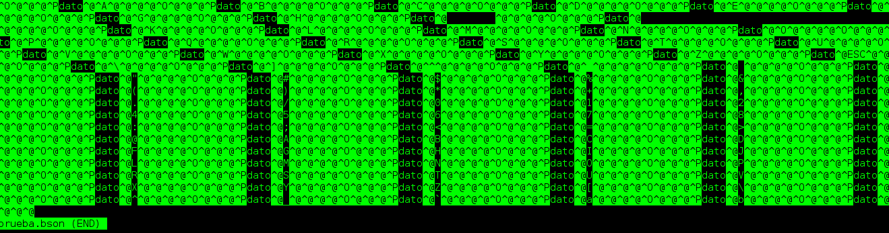

En artículos anteriores se ha tocado el tema de una base de datos mongodb con python, ahora en esté artículo se tocará el tema de un archivo binario que almacene documentos JSON en vez de usar un servidor mongodb.
Lo primero que se hará es crear un archivo con extensión bson donde se guardará un diccionario (json) con datos aleatorios y luego se busca la información del archivo.
Se tiene que tener instalado la libería bson para python:
apt-get install python-bson python3-bson
Escribir en un archivo bson:
#!/usr/bin/env python3
#Se importa el módulo bson
import bson
#Se abre el archivo prueba.bson para escritura y binario
f = open("prueba.bson", 'wb')
#Se intenta guardando un rango de valores del 1 al 99 decodificandolo en formato bson
try:
for i in range(1,100):
f.write(bson.BSON.encode({"dato":i}))
finally:
f.close()
Al ejecutar el script se puede ver con un ls que el archivo pruebas.bson se ha creado y tiene datos dentro del mismo:
ls -l prueba.bson
-rw-r--r-- 1 ernesto ernesto 1485 dic 13 12:16 prueba.bson
El código de lectura se muestra a continuación:
#!/usr/bin/env python3
#Se importa la libería bson
import bson
#Se abre el archivo prueba.bson en modo lectura y binario
f = open("prueba.bson", 'rb')
#Se extrae la información almacenada y se decodifica el bson
resultado = bson.decode_all(f.read())
#Se imprime en pantalla la lista
print (resultado)
El resultado de ejecutar el script se muestra a continuación:
python lectura.py
[{u'dato': 1}, {u'dato': 2}, {u'dato': 3}, {u'dato': 4}, {u'dato': 5}, {u'dato': 6}, {u'dato': 7}, {u'dato': 8}, {u'dato': 9}, {u'dato': 10}, {u'dato': 11}, {u'dato': 12}, {u'dato': 13}, {u'dato': 14}, {u'dato': 15}, {u'dato': 16}, {u'dato': 17}, {u'dato': 18}, {u'dato': 19}, {u'dato': 20}, {u'dato': 21}, {u'dato': 22}, {u'dato': 23}, {u'dato': 24}, {u'dato': 25}, {u'dato': 26}, {u'dato': 27}, {u'dato': 28}, {u'dato': 29}, {u'dato': 30}, {u'dato': 31}, {u'dato': 32}, {u'dato': 33}, {u'dato': 34}, {u'dato': 35}, {u'dato': 36}, {u'dato': 37}, {u'dato': 38}, {u'dato': 39}, {u'dato': 40}, {u'dato': 41}, {u'dato': 42}, {u'dato': 43}, {u'dato': 44}, {u'dato': 45}, {u'dato': 46}, {u'dato': 47}, {u'dato': 48}, {u'dato': 49}, {u'dato': 50}, {u'dato': 51}, {u'dato': 52}, {u'dato': 53}, {u'dato': 54}, {u'dato': 55}, {u'dato': 56}, {u'dato': 57}, {u'dato': 58}, {u'dato': 59}, {u'dato': 60}, {u'dato': 61}, {u'dato': 62}, {u'dato': 63}, {u'dato': 64}, {u'dato': 65}, {u'dato': 66}, {u'dato': 67}, {u'dato': 68}, {u'dato': 69}, {u'dato': 70}, {u'dato': 71}, {u'dato': 72}, {u'dato': 73}, {u'dato': 74}, {u'dato': 75}, {u'dato': 76}, {u'dato': 77}, {u'dato': 78}, {u'dato': 79}, {u'dato': 80}, {u'dato': 81}, {u'dato': 82}, {u'dato': 83}, {u'dato': 84}, {u'dato': 85}, {u'dato': 86}, {u'dato': 87}, {u'dato': 88}, {u'dato': 89}, {u'dato': 90}, {u'dato': 91}, {u'dato': 92}, {u'dato': 93}, {u'dato': 94}, {u'dato': 95}, {u'dato': 96}, {u'dato': 97}, {u'dato': 98}, {u'dato': 99}]
Devuelve una lista de diccionarios(json) con los datos almacenados en el archivo.
El archivo binario contiene algo como lo siguiente:

¡Haz tu donativo! Si te gustó el artículo puedes realizar un donativo con Bitcoin (BTC) usando la billetera digital de tu preferencia a la siguiente dirección: 17MtNybhdkA9GV3UNS6BTwPcuhjXoPrSzV
O Escaneando el código QR desde la billetera:

Comments !